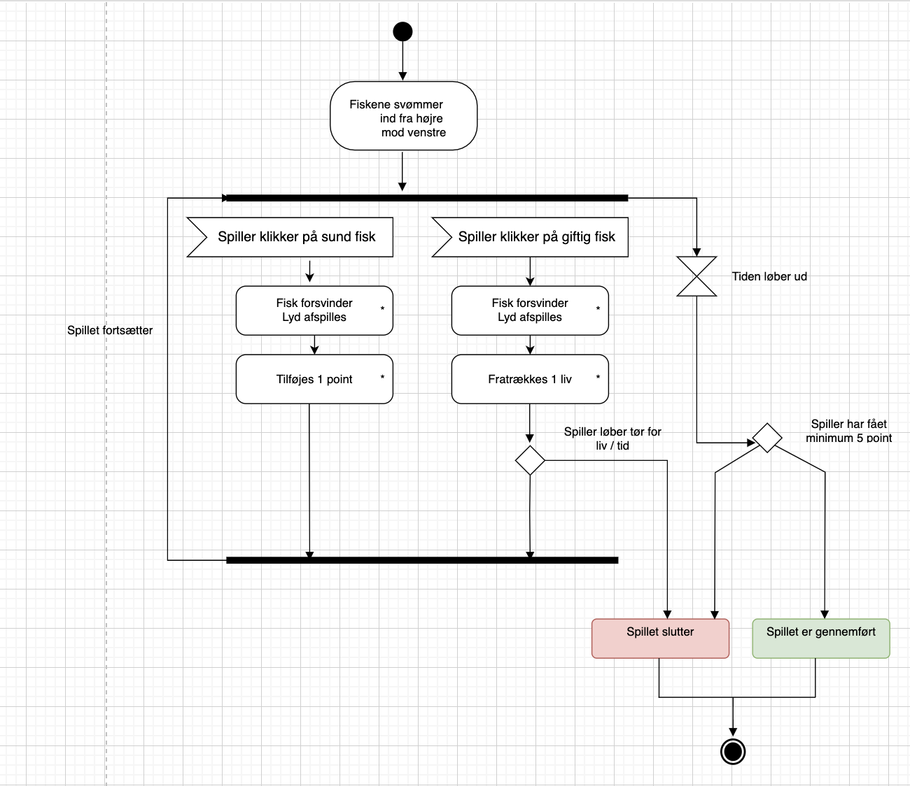

Til udarbejdelsen af spillet har jeg benyttet:
mindmap/stiludgangspunkt for at finde temaet for spillet
moodboard og stiletyle til at skabe rammerne om fortællingen
low fidelity prototype for at visualisere scener og funktioner
prototype for at skabe et visuelt udtryk
aktivitetsdiagram: proces i spillet
Analyse af stil:
flat design, klare farver, baby bias hos de gode figurer, skarpere
kanter hos de “onde”
Rentegning i hånden og i AI:tommelfinger skitse & storyboard
designet figurer
designet baggrundet
designet titelskærm, vinder- og taberskærm
asset liste: figurer, UI elementer og lyd
Taget stilling til Game Mechanics:hvordan skal figurerne bevæge sig
hvad giver +/- point
hvordan skal karaktererne agere. Skal de dreje, fade osv?
hvad stopper spillet
Brugt
CSS positionering, CSS transform og CSS Keyframeanimationer og opbygget
klasser til spillet
JavaScript
eventListeners til at afvikle funktioner, lyd og animation
Timer funktioner
Ud fra aktivitetsdiagram, prototype og kode, lavede jeg et Statemachinediagram. Her testede jeg spillet igennem teoretisk, inden de sidste implementeringer af kode
Analyse af stil:
Rentegning i hånden og i AI:
Taget stilling til Game Mechanics:
Brugt
Ud fra aktivitetsdiagram, prototype og kode, lavede jeg et Statemachinediagram. Her testede jeg spillet igennem teoretisk, inden de sidste implementeringer af kode